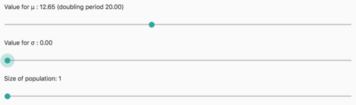
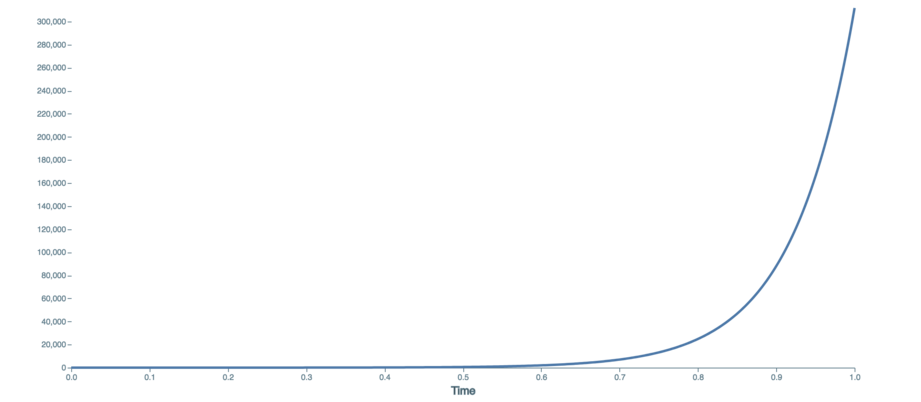
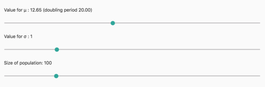
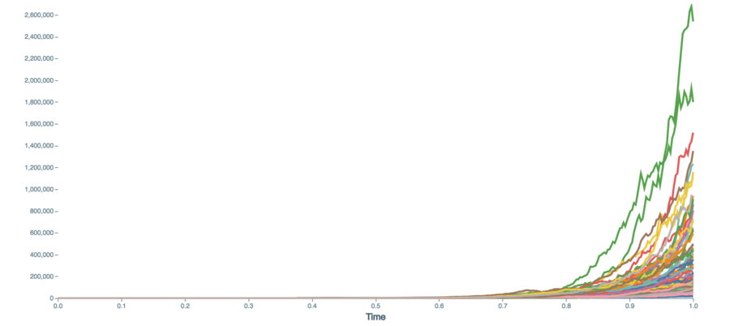
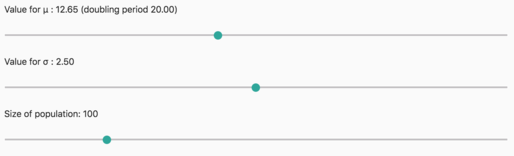
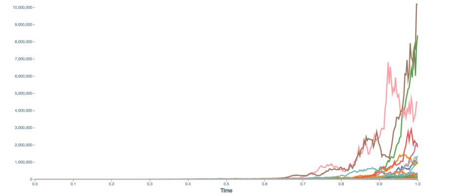

A Practical Approach to Model Error - Part 2
It’s been a while since I first wrote about tackling model error using a simple model. It’s about time to come back to it.
What triggered the current post is the opportunity I was given to give a masterclass in the Evidence and policy summer school. Since my masterclass is about uncertainty in decision making, it seemed like a nice opportunity to look back at the simple model.
Introduction
I’m not going to introduce the model again, but I do want to reiterate that it’s a very simplistic model when it comes to actually modelling the spreading of a real virus. On the other hand though, if Nobel prizes are awarded for applying this kind of model there must be some value in it.
Running the Different Scenarios
For the summerschool, I developed a little web application called Incertae and which allows you to run the scenarios from a browser. Just try it for yourself!
In order to make sense of the scenarios, let’s walk through this step by step…
Step 1: No Randomness
By clicking on the parameters of the simulation, or below in the footer on the words can be changed, the simulation settings can be adjusted.
Set the variables such that there is no randomness applied to the scenario. Only one scenario is sufficient in this case:

And see what the result looks like:

Step 2: A bit of Randomness
In step 2, we add a bit of randomness. For this we use the default settings, although you could increase the number of scenarios if you wanted to:

The result should look similar to the following. Please note that randomness has been added, so your result should not look exactly like the one presented here!

Step 3: A bit more Randomness
In step 3, we increase the amount of randomness added to the scenarios. For instance:

Now, given more randomness in the scenarios, yours might be completely different from the one below:
